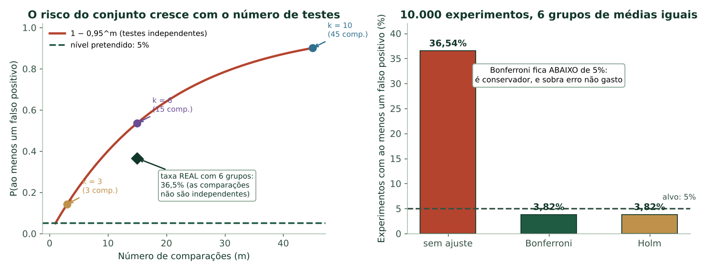
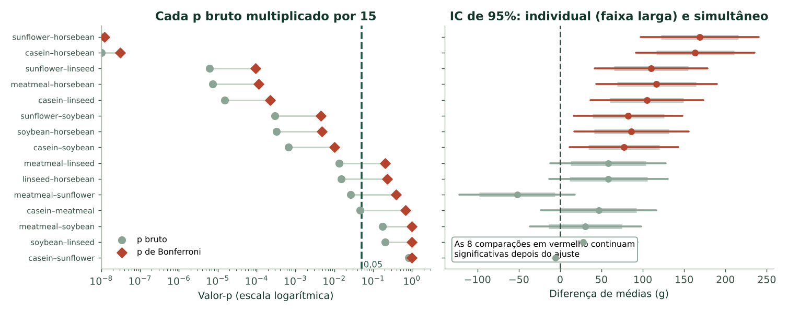

Ajuste de Bonferroni
Divide o nível de significância pelo número de testes, controlando a taxa de erro do conjunto sem supor nada sobre a dependência entre eles.
Comece por aqui
Um teste a 5% erra uma vez em vinte. Quinze testes a 5% erram com muito mais frequência — e o erro que interessa deixa de ser o de cada teste e passa a ser o do conjunto: a chance de que ao menos uma das conclusões esteja errada. O ajuste de Bonferroni é a resposta mais simples possível a esse problema: divida o nível por quantos testes você fez.
Com \(m\) testes e nível global \(\alpha\), cada teste é avaliado a \(\alpha/m\). Na prática é mais cômodo multiplicar cada valor-p por \(m\) e comparar com \(\alpha\) — é o que p.adjust() faz, truncando em 1.
O que é o ajuste
A desigualdade de Boole garante que a probabilidade da união de \(m\) eventos nunca excede a soma de suas probabilidades. Se cada teste rejeita indevidamente com probabilidade \(\alpha/m\), a chance de ao menos um falso positivo é no máximo \(m\times\alpha/m=\alpha\). O resultado vale qualquer que seja a dependência entre os testes — e essa generalidade é, ao mesmo tempo, a força e a fraqueza do método.

A desigualdade de Boole é um limite superior, atingido só quando os eventos são disjuntos. Com testes correlacionados, a soma superestima a união, e sobra erro não gasto: no exemplo, 3,82% em vez dos 5% disponíveis. Essa folga é poder desperdiçado — diferenças reais que deixam de ser detectadas. É o preço de um método que não supõe nada sobre a estrutura dos testes.
Pressupostos e como verificá-los
| Pressuposto | Por que importa | Como verificar |
|---|---|---|
| Cada valor-p individual é válido | O ajuste corrige a multiplicidade, não um teste mal especificado. | Verifique os pressupostos de cada teste. |
| A família de testes está definida antes de ver os dados | Ajustar só pelos testes que deram significativos não protege nada. | Registre o plano de análise. |
| Independência entre os testes | Não é exigida: a desigualdade de Boole vale sempre. | — |
| Mesma distribuição ou mesmo tipo de teste | Não é exigido: a família pode misturar testes diferentes. | — |
| m não ser grande demais | Com m na casa das centenas, o nível individual fica impraticável. | Considere controlar a taxa de falsas descobertas (FDR). |
A decisão mais importante não é técnica, é de julgamento: quais testes formam a família. As comparações de um mesmo experimento, sim. Todos os testes de uma tese, provavelmente não. A convenção usual é agrupar os testes que respondem a uma mesma pergunta científica e sobre os quais se fará uma afirmação conjunta.
Hipóteses e estatística de teste
Bonferroni não é um teste: é um ajuste aplicado a uma família de testes quaisquer. A hipótese que ele controla é a da família inteira.
Em que:
- \(m\)
- número de testes da família
- \(p_i\)
- valor-p bruto do i-ésimo teste
- \(p_i^{\text{aj}}\)
- valor-p ajustado
- \(A_i\)
- evento "o i-ésimo teste rejeita indevidamente"
- \(\alpha\)
- taxa de erro do conjunto pretendida
Exemplo numérico, passo a passo
Com seis rações há \(m=6\times5/2=15\) comparações, e o nível individual passa a \(0{,}05/15=0{,}003333\).
| Comparação | Diferença (g) | p bruto | × 15 | Ajustado | Decisão |
|---|---|---|---|---|---|
| casein − soybean | +77,15 | 0,00067 | 0,00998 | 0,00998 | significativa |
| meatmeal − linseed | +58,16 | 0,01348 | 0,20218 | 0,20218 | não significativa |
| linseed − horsebean | +58,55 | 0,01522 | 0,22833 | 0,22833 | não significativa |
| casein − meatmeal | +46,67 | 0,04557 | 0,68350 | 0,68350 | não significativa |
| meatmeal − soybean | +30,48 | 0,17255 | 2,58825 | 1,00000 | não significativa |
O valor-p bruto de casein − soybean é 0,00067; multiplicado por 15 dá 0,00998, ainda abaixo de 0,05: a comparação sobrevive ao ajuste.
O de casein − meatmeal é 0,04557, significativo isoladamente. Multiplicado por 15 vira 0,684, e a conclusão se desfaz. Era exatamente o tipo de resultado que, num conjunto de quinze testes, se espera encontrar por acaso.
O último exemplo mostra o truncamento: 15 × 0,17255 = 2,588, que não é um valor-p; por isso o ajustado é 1.
Na escala do teste t com 65 graus de liberdade, o valor crítico bilateral passa de 1,9971 para 3,0476 — uma exigência 53% maior em termos de erros-padrão.
Holm: a melhoria que não custa nada
O procedimento de Holm aplica Bonferroni de forma sequencial. Ordenam-se os valores-p, \(p_{(1)}\leq\cdots\leq p_{(m)}\), e compara-se \(p_{(i)}\) com \(\alpha/(m-i+1)\): o menor enfrenta \(\alpha/m\), o segundo \(\alpha/(m-1)\), e assim por diante, parando na primeira falha. A proteção da taxa de erro do conjunto é exatamente a mesma, e o poder é sempre maior ou igual.
Não há razão prática para preferir Bonferroni a Holm quando o objetivo é apenas decidir quais testes rejeitar. Bonferroni continua útil porque é simples de explicar, porque fornece intervalos de confiança simultâneos diretos e porque muita literatura o usa.
Propriedades
- Controla a taxa de erro do conjunto no sentido forte: vale qualquer que seja o subconjunto de hipóteses nulas verdadeiras.
- Não supõe independência nem distribuição comum; aplica-se a famílias heterogêneas de testes.
- É conservador, e tanto mais quanto maiores a dependência e o valor de m.
- Fornece intervalos simultâneos trocando \(t_{\alpha/2}\) por \(t_{\alpha/(2m)}\).
- Holm domina Bonferroni; Šidák é ligeiramente menos conservador, ao custo de supor independência.
- Para m muito grande, controlar a FDR (Benjamini–Hochberg) costuma ser mais sensato que controlar a FWER.
Como interpretar os resultados
| Elemento | O que informa | Cuidado |
|---|---|---|
| p ajustado | Compare diretamente com α. | Truncado em 1; não é uma probabilidade do teste individual. |
| Nível individual α/m | A exigência imposta a cada teste. | Caindo muito, o poder desaba. |
| IC simultâneos | Cobertura conjunta de 95%. | Mais largos que os individuais. |
| Número de significativas | Quantas sobrevivem. | Compare com o número sem ajuste. |
| Holm | Mesma proteção, mais poder. | Prefira-o quando só se quer decidir. |
| BH (FDR) | Controla a proporção de falsas descobertas. | Outro objetivo; não é FWER. |
Reporte sempre: qual era a família, quantos testes ela tinha, qual o método de ajuste e os valores-p ajustados — nunca só os brutos.
Como executar no R e em Python
Onde executar o código em Python
Não é preciso instalar nada: o Google Colab é um computador na nuvem, gratuito, que executa Python pelo navegador e já traz as bibliotecas usadas aqui (numpy, scipy e matplotlib).
p.adjust() e pairwise.t.test() estão no pacote stats, já instalado com o R. p.adjust() aceita um vetor de valores-p de qualquer origem e os métodos "bonferroni", "holm", "hochberg", "hommel", "BH" e "BY". Para contrastes definidos pelo usuário, multcomp::glht() com test = adjusted("bonferroni"); emmeans aceita adjust = "bonferroni" em qualquer comparação.
p.adjust(p, method = "bonferroni")
with(chickwts, pairwise.t.test(weight, feed, p.adjust.method = "bonferroni"))
Exemplo de aplicação
Contexto dos dados
chickwts registra o peso, aos seis dias, de 71 pintinhos alimentados com seis rações diferentes. Os grupos têm tamanhos ligeiramente desiguais (de 10 a 14 aves), os resíduos passam no teste de normalidade (p = 0,627) e as variâncias são homogêneas (Brown–Forsythe p = 0,590). A ANOVA devolve F(5; 65) = 15,365 com p = 5,9 × 10⁻¹⁰: há diferença, e a pergunta passa a ser onde. Com seis rações são quinze comparações — e é esse número que cria o problema de multiplicidade. As fichas de Bonferroni, Šidák, Tukey e Games–Howell usam este mesmo conjunto, para que os resultados possam ser comparados diretamente.
Código em R
# Ajuste de Bonferroni: exemplo completo ----
# Pacotes: stats (base). Opcionais: multcomp, emmeans, rstatix
# install.packages(c("multcomp", "emmeans"))
# 1. Dados: chickwts, peso de pintinhos por tipo de ração
data(chickwts)
table(chickwts$feed)
modelo <- aov(weight ~ feed, data = chickwts)
summary(modelo)
# 2. A conta que justifica o ajuste
k <- nlevels(chickwts$feed); m <- k * (k - 1) / 2
m # 15 comparações
1 - 0.95^m # risco do conjunto SE os testes fossem independentes
# 3. A forma mais direta: p.adjust() sobre valores-p brutos
with(chickwts, pairwise.t.test(weight, feed, p.adjust.method = "none"))
with(chickwts, pairwise.t.test(weight, feed, p.adjust.method = "bonferroni"))
with(chickwts, pairwise.t.test(weight, feed, p.adjust.method = "holm"))
# 4. p.adjust() funciona com QUALQUER vetor de valores-p
p <- c(0.001, 0.013, 0.021, 0.049, 0.310)
p.adjust(p, method = "bonferroni")
p.adjust(p, method = "holm") # mais poderoso, mesma proteção
data.frame(bruto = p,
bonferroni = p.adjust(p, "bonferroni"),
holm = p.adjust(p, "holm"),
BH_fdr = p.adjust(p, "BH"))
# 5. Intervalos de confiança simultâneos de Bonferroni
alfa <- 0.05
gl <- df.residual(modelo); QM <- sum(residuals(modelo)^2) / gl
tcrit <- qt(1 - alfa / (2 * m), gl)
medias <- tapply(chickwts$weight, chickwts$feed, mean)
ns <- table(chickwts$feed)
pares <- combn(levels(chickwts$feed), 2)
ic <- t(apply(pares, 2, function(p_) {
d <- medias[p_[2]] - medias[p_[1]]
ep <- sqrt(QM * (1/ns[p_[1]] + 1/ns[p_[2]]))
c(diferenca = d, inferior = d - tcrit * ep, superior = d + tcrit * ep)
}))
rownames(ic) <- apply(pares, 2, paste, collapse = " - ")
round(ic, 2)
# 6. Bonferroni não é só para comparações pareadas: contrastes planejados
library(multcomp)
levels(chickwts$feed) # a ordem das colunas: casein horsebean linseed meatmeal soybean sunflower
contrastes <- rbind(
"vegetais - animais" = c(-1/2, 1/3, 1/3, -1/2, 1/3, 0 ),
"sunflower - as demais" = c(-1/5, -1/5, -1/5, -1/5, -1/5, 1 ),
"horsebean - as demais" = c(-1/5, 1, -1/5, -1/5, -1/5, -1/5))
rowSums(contrastes) # cada linha deve somar zero
summary(glht(modelo, linfct = mcp(feed = contrastes)), test = adjusted("bonferroni"))
confint(glht(modelo, linfct = mcp(feed = contrastes)))
# 7. Comparação com Tukey, construído para este conjunto de comparações
TukeyHSD(modelo)
# 8. Gráfico
par(mar = c(5, 10, 4, 2))
plot(TukeyHSD(modelo), las = 1, cex.axis = 0.7)
par(mar = c(5, 4, 4, 2))
A mesma análise em Python, com os resultados
Cole o código em um notebook do Google Colab ↗ e execute com Shift+Enter. Os valores abaixo são a saída desse código.
# Bibliotecas: numpy, scipy e matplotlib (já instaladas no Google Colab)
import numpy as np
from scipy import stats
import itertools
# Dados: chickwts (R). Peso (g) de 71 pintinhos aos 6 dias, segundo seis rações.
# Fonte original: Anonymous (1948), Biometrika 35, p. 214; ver McNeil (1977).
dados = {
"horsebean": [179,160,136,227,217,168,108,124,143,140],
"linseed": [309,229,181,141,260,203,148,169,213,257,244,271],
"soybean": [243,230,248,327,329,250,193,271,316,267,199,171,158,248],
"sunflower": [423,340,392,339,341,226,320,295,334,322,297,318],
"meatmeal": [325,257,303,315,380,153,263,242,206,344,258],
"casein": [368,390,379,260,404,318,352,359,216,222,283,332]}
nomes = list(dados)
gs = [np.array(v, float) for v in dados.values()]
k = len(gs)
ns = np.array([len(g) for g in gs], float)
N = int(ns.sum())
medias = np.array([g.mean() for g in gs])
print("ração n média DP")
for i, nm in enumerate(nomes):
print(f"{nm:<12}{int(ns[i]):2d} {medias[i]:7.3f} {gs[i].std(ddof=1):6.2f}")
F, pF = stats.f_oneway(*gs)
QM = np.sum((ns - 1) * np.array([g.var(ddof=1) for g in gs])) / (N - k)
gl = N - k
print(f"\nANOVA: F({k-1}; {gl}) = {F:.4f}, p-valor = {pF:.4e}")
print(f"QM do resíduo = {QM:.3f} | DP residual = {np.sqrt(QM):.3f} g")
print(f"Shapiro-Wilk dos resíduos: p = {stats.shapiro(np.concatenate([g-g.mean() for g in gs]))[1]:.4f}")
print(f"Brown-Forsythe: p = {stats.levene(*gs, center='median')[1]:.4f}")
# 1. O problema que o ajuste resolve
m = k * (k - 1) // 2
print(f"\nCom {k} grupos há m = {m} comparações duas a duas.")
print("Se cada uma fosse testada a 5%, a chance de ao menos um falso positivo seria")
print(f" 1 - 0,95^{m} = {1 - 0.95**m:.4f}, ou seja {100*(1-0.95**m):.1f}%, e não 5%.")
print("\nComo essa taxa cresce com o número de comparações:")
print(" k grupos comparações 1 - 0,95^m")
for kk in (2, 3, 4, 5, 6, 8, 10, 20):
mm = kk*(kk-1)//2
print(f" {kk:3d} {mm:4d} {1-0.95**mm:.4f}")
# 2. Simulação: a taxa de erro do conjunto, com e sem ajuste
print("\nSimulação: 10.000 experimentos com SEIS grupos de médias IGUAIS (n = 12 cada).")
rng = np.random.default_rng(2026)
M = 10000
falso_sem = falso_bonf = falso_holm = 0
pares = list(itertools.combinations(range(6), 2))
for _ in range(M):
g6 = [rng.normal(0, 1, 12) for _ in range(6)]
pv = np.array([stats.ttest_ind(g6[a], g6[b]).pvalue for a, b in pares])
if (pv < 0.05).any(): falso_sem += 1
if (np.minimum(1, len(pv)*pv) < 0.05).any(): falso_bonf += 1
ordem = np.argsort(pv); holm = np.empty(len(pv)); ac = 0.0
for pos, idx in enumerate(ordem):
ac = max(ac, (len(pv) - pos) * pv[idx]); holm[idx] = min(1.0, ac)
if (holm < 0.05).any(): falso_holm += 1
print(f" sem ajuste: {100*falso_sem/M:.2f}% dos experimentos tiveram ao menos um falso positivo")
print(f" Bonferroni: {100*falso_bonf/M:.2f}%")
print(f" Holm: {100*falso_holm/M:.2f}%")
print("\n O alvo é 5%. Sem ajuste, 36,5% dos experimentos produzem ao menos um falso")
print(" positivo - bem acima de 5%, mas ABAIXO dos 53,7% da conta anterior. A conta")
print(" 1 - 0,95^15 supõe testes independentes, e as 15 comparações não são: cada")
print(" grupo entra em cinco delas. Essa dependência é o que torna o Bonferroni")
print(" conservador aqui: ele fica em 3,82%, gastando menos que os 5% disponíveis.")
# 3. As 15 comparações dos dados reais
print(f"\nAs {m} comparações (teste t com variância agrupada, {gl} gl)")
brutos = []; difs = []; rotulos = []
for a, b in itertools.combinations(range(k), 2):
dif = medias[b] - medias[a]
ep = np.sqrt(QM * (1/ns[a] + 1/ns[b]))
t = dif / ep
brutos.append(2 * stats.t.sf(abs(t), gl)); difs.append(dif); rotulos.append(f"{nomes[b]} - {nomes[a]}")
brutos = np.array(brutos); difs = np.array(difs)
bonf = np.minimum(1, m * brutos)
ordem = np.argsort(brutos); holm = np.empty(m); ac = 0.0
for pos, idx in enumerate(ordem):
ac = max(ac, (m - pos) * brutos[idx]); holm[idx] = min(1.0, ac)
tuk = np.array([stats.studentized_range.sf(abs(d)/np.sqrt(QM/2*(1/ns[a]+1/ns[b])), k, gl)
for d, (a, b) in zip(difs, itertools.combinations(range(k), 2))])
print(f"{'comparação':<26}{'dif.':>9}{'p bruto':>11}{'Bonferroni':>12}{'Holm':>11}{'Tukey':>11}")
for i in np.argsort(brutos):
marca = lambda v: "*" if v < 0.05 else " "
print(f"{rotulos[i]:<26}{difs[i]:9.2f}{brutos[i]:11.5f}{bonf[i]:11.5f}{marca(bonf[i])}"
f"{holm[i]:10.5f}{marca(holm[i])}{tuk[i]:10.5f}{marca(tuk[i])}")
print(f"\nSignificativas: sem ajuste {np.sum(brutos<0.05)} | Bonferroni {np.sum(bonf<0.05)}"
f" | Holm {np.sum(holm<0.05)} | Tukey {np.sum(tuk<0.05)}")
# 4. O nível individual e o intervalo de confiança correspondentes
alfa = 0.05
print(f"\nNível individual sob Bonferroni: {alfa}/{m} = {alfa/m:.6f}")
tcrit = stats.t.ppf(1 - alfa/(2*m), gl)
print(f"t crítico bilateral correspondente: {tcrit:.4f} (contra {stats.t.ppf(1-alfa/2, gl):.4f} sem ajuste)")
print(f"q crítico de Tukey: {stats.studentized_range.ppf(1-alfa, k, gl)/np.sqrt(2):.4f} na mesma escala")
print("\nIntervalos de confiança simultâneos de 95% (Bonferroni)")
for i in np.argsort(-np.abs(difs))[:5]:
a, b = list(itertools.combinations(range(k), 2))[i]
ep = np.sqrt(QM*(1/ns[a] + 1/ns[b]))
print(f" {rotulos[i]:<26}{difs[i]:8.2f} IC = [{difs[i]-tcrit*ep:8.2f}; {difs[i]+tcrit*ep:8.2f}]")
# 5. Bonferroni fora das comparações pareadas: três contrastes planejados
print("\nBonferroni não é só para comparações pareadas. Três contrastes planejados:")
contr = {
"vegetais (horsebean, linseed, soybean) vs animais (meatmeal, casein)":
np.array([1/3, 1/3, 1/3, 0, -1/2, -1/2]),
"sunflower vs a média de todas as outras":
np.array([-1/5, -1/5, -1/5, 1, -1/5, -1/5]),
"horsebean vs a média de todas as outras":
np.array([1, -1/5, -1/5, -1/5, -1/5, -1/5])}
pc = []
for nome, c in contr.items():
L = float(c @ medias); ep = float(np.sqrt(QM * np.sum(c**2 / ns)))
t = L / ep; pv = 2 * stats.t.sf(abs(t), gl); pc.append(pv)
print(f" {nome}\n L = {L:+8.3f} g | EP = {ep:6.3f} | t({gl}) = {t:+7.3f} | p = {pv:.3e} | "
f"Bonferroni (3 testes) = {min(1, 3*pv):.3e}")
Resultados da execução
ração n média DP
horsebean 10 160.200 38.63
linseed 12 218.750 52.24
soybean 14 246.429 54.13
sunflower 12 328.917 48.84
meatmeal 11 276.909 64.90
casein 12 323.583 64.43
ANOVA: F(5; 65) = 15.3648, p-valor = 5.9364e-10
QM do resíduo = 3008.554 | DP residual = 54.850 g
Shapiro-Wilk dos resíduos: p = 0.6272
Brown-Forsythe: p = 0.5896
Com 6 grupos há m = 15 comparações duas a duas.
Se cada uma fosse testada a 5%, a chance de ao menos um falso positivo seria
1 - 0,95^15 = 0.5367, ou seja 53.7%, e não 5%.
Como essa taxa cresce com o número de comparações:
k grupos comparações 1 - 0,95^m
2 1 0.0500
3 3 0.1426
4 6 0.2649
5 10 0.4013
6 15 0.5367
8 28 0.7622
10 45 0.9006
20 190 0.9999
Simulação: 10.000 experimentos com SEIS grupos de médias IGUAIS (n = 12 cada).
sem ajuste: 36.54% dos experimentos tiveram ao menos um falso positivo
Bonferroni: 3.82%
Holm: 3.82%
O alvo é 5%. Sem ajuste, 36,5% dos experimentos produzem ao menos um falso
positivo - bem acima de 5%, mas ABAIXO dos 53,7% da conta anterior. A conta
1 - 0,95^15 supõe testes independentes, e as 15 comparações não são: cada
grupo entra em cinco delas. Essa dependência é o que torna o Bonferroni
conservador aqui: ele fica em 3,82%, gastando menos que os 5% disponíveis.
As 15 comparações (teste t com variância agrupada, 65 gl)
comparação dif. p bruto Bonferroni Holm Tukey
sunflower - horsebean 168.72 0.00000 0.00000* 0.00000* 0.00000*
casein - horsebean 163.38 0.00000 0.00000* 0.00000* 0.00000*
sunflower - linseed 110.17 0.00001 0.00009* 0.00008* 0.00009*
meatmeal - horsebean 116.71 0.00001 0.00011* 0.00009* 0.00011*
casein - linseed 104.83 0.00001 0.00022* 0.00016* 0.00021*
sunflower - soybean 82.49 0.00030 0.00447* 0.00298* 0.00388*
soybean - horsebean 86.23 0.00032 0.00487* 0.00298* 0.00422*
casein - soybean 77.15 0.00067 0.00998* 0.00532* 0.00837*
meatmeal - linseed 58.16 0.01348 0.20218 0.09435 0.12770
linseed - horsebean 58.55 0.01522 0.22833 0.09435 0.14133
meatmeal - sunflower -52.01 0.02644 0.39653 0.13218 0.22070
casein - meatmeal 46.67 0.04557 0.68350 0.18227 0.33246
meatmeal - soybean 30.48 0.17255 1.00000 0.51766 0.73914
soybean - linseed 27.68 0.20414 1.00000 0.51766 0.79329
casein - sunflower -5.33 0.81249 1.00000 0.81249 0.99989
Significativas: sem ajuste 12 | Bonferroni 8 | Holm 8 | Tukey 8
Nível individual sob Bonferroni: 0.05/15 = 0.003333
t crítico bilateral correspondente: 3.0476 (contra 1.9971 sem ajuste)
q crítico de Tukey: 2.9364 na mesma escala
Intervalos de confiança simultâneos de 95% (Bonferroni)
sunflower - horsebean 168.72 IC = [ 97.14; 240.29]
casein - horsebean 163.38 IC = [ 91.81; 234.96]
meatmeal - horsebean 116.71 IC = [ 43.67; 189.75]
sunflower - linseed 110.17 IC = [ 41.92; 178.41]
casein - linseed 104.83 IC = [ 36.59; 173.08]
Bonferroni não é só para comparações pareadas. Três contrastes planejados:
vegetais (horsebean, linseed, soybean) vs animais (meatmeal, casein)
L = -91.787 g | EP = 14.704 | t(65) = -6.242 | p = 3.695e-08 | Bonferroni (3 testes) = 1.108e-07
sunflower vs a média de todas as outras
L = +83.742 g | EP = 17.388 | t(65) = +4.816 | p = 9.119e-06 | Bonferroni (3 testes) = 2.736e-05
horsebean vs a média de todas as outras
L = -118.718 g | EP = 18.721 | t(65) = -6.341 | p = 2.484e-08 | Bonferroni (3 testes) = 7.451e-08
| Comparação | Dif. (g) | p bruto | Bonferroni | Holm | Tukey |
|---|---|---|---|---|---|
| sunflower − horsebean | +168,72 | < 0,00001 | < 0,00001 * | < 0,00001 * | < 0,00001 * |
| casein − horsebean | +163,38 | < 0,00001 | < 0,00001 * | < 0,00001 * | < 0,00001 * |
| sunflower − linseed | +110,17 | 0,00001 | 0,00009 * | 0,00008 * | 0,00009 * |
| meatmeal − horsebean | +116,71 | 0,00001 | 0,00011 * | 0,00009 * | 0,00011 * |
| casein − linseed | +104,83 | 0,00001 | 0,00022 * | 0,00016 * | 0,00021 * |
| sunflower − soybean | +82,49 | 0,00030 | 0,00447 * | 0,00298 * | 0,00388 * |
| soybean − horsebean | +86,23 | 0,00032 | 0,00487 * | 0,00298 * | 0,00422 * |
| casein − soybean | +77,15 | 0,00067 | 0,00998 * | 0,00532 * | 0,00837 * |
| meatmeal − linseed | +58,16 | 0,01348 | 0,20218 | 0,09435 | 0,12770 |
| linseed − horsebean | +58,55 | 0,01522 | 0,22833 | 0,09435 | 0,14133 |
| meatmeal − sunflower | −52,01 | 0,02644 | 0,39653 | 0,13218 | 0,22070 |
| casein − meatmeal | +46,67 | 0,04557 | 0,68350 | 0,18227 | 0,33246 |
| meatmeal − soybean | +30,48 | 0,17255 | 1,00000 | 0,51766 | 0,73914 |
| soybean − linseed | +27,68 | 0,20414 | 1,00000 | 0,51766 | 0,79329 |
| casein − sunflower | −5,33 | 0,81249 | 1,00000 | 0,81249 | 0,99989 |
| Elemento | Valor | Leitura |
|---|---|---|
| Significativas sem ajuste | 12 de 15 | Inflacionado pela multiplicidade. |
| Significativas com Bonferroni | 8 | As mesmas 8 do Tukey e do Holm. |
| Nível individual | 0,05 / 15 = 0,003333 | A exigência por teste. |
| t crítico | 3,0476 (contra 1,9971) | 53% mais exigente. |
| Simulação sem ajuste | 36,54% de falsos positivos no conjunto | O problema. |
| Simulação com Bonferroni | 3,82% | Abaixo de 5%: conservador. |
| Simulação com Holm | 3,82% | Mesma proteção. |
| IC de sunflower − horsebean | [97,14; 240,29] g | Simultâneo; o individual seria [121,81; 215,62]. |
Leitura: oito das quinze comparações sobrevivem ao ajuste, e as quatro que se perdem são justamente as que tinham valores-p entre 0,013 e 0,046 — a faixa em que, com quinze testes, resultados assim são esperados por acaso. As rações de sementes de girassol e de caseína produziram os maiores pesos; a de feijão-de-cavalo, o menor, e difere de todas as outras exceto da linhaça.
Vale observar que, neste exemplo, Bonferroni, Holm e Tukey chegam exatamente às mesmas oito conclusões, embora com valores-p diferentes. Isso é comum quando os efeitos são claros. A diferença entre os métodos aparece nas comparações de fronteira: meatmeal − linseed, por exemplo, tem p ajustado de 0,202 por Bonferroni, 0,094 por Holm e 0,128 por Tukey. Nenhum chega a 0,05 — mas, com uma amostra um pouco maior, o método escolhido decidiria o resultado.
Onde Bonferroni é insubstituível
Tukey só serve para comparações pareadas entre médias de um mesmo modelo. Bonferroni serve para qualquer família, inclusive uma que misture contrastes de naturezas diferentes. Nestes dados, três contrastes planejados sobre a origem da ração:
| Contraste | Estimativa (g) | EP | t(65) | p bruto | p ajustado (3 testes) |
|---|---|---|---|---|---|
| vegetais (horsebean, linseed, soybean) − animais (meatmeal, casein) | −91,79 | 14,70 | −6,242 | 3,7 × 10⁻⁸ | 1,1 × 10⁻⁷ |
| sunflower − média das demais | +83,74 | 17,39 | +4,816 | 9,1 × 10⁻⁶ | 2,7 × 10⁻⁵ |
| horsebean − média das demais | −118,72 | 18,72 | −6,341 | 2,5 × 10⁻⁸ | 7,5 × 10⁻⁸ |
Aqui a família tem três elementos, não quinze, e o ajuste é por 3. As rações de origem animal superam as vegetais em 91,8 g em média, e o girassol — vegetal — é a exceção que puxa o grupo para cima. Note que a família encolheu porque as perguntas foram definidas antes de olhar os dados: é o principal benefício prático de planejar os contrastes.
Erros comuns
| Erro | Como evitar |
|---|---|
| Ajustar só pelos testes que deram significativos | A família é definida antes, não depois. |
| Reportar só os valores-p brutos | Informe sempre qual ajuste foi usado e por quantos testes. |
| Usar Bonferroni quando Holm serviria | Holm dá a mesma proteção com mais poder. |
| Aplicar a famílias enormes sem pensar | Com m na casa dos milhares, considere FDR. |
| Tratar o p ajustado como probabilidade do teste individual | Ele é uma ferramenta de decisão sobre a família. |
| Dividir α e depois comparar o p bruto com α | Ou divide o nível, ou multiplica o p — nunca os dois. |
| Usar Bonferroni para todas as comparações pareadas | Tukey é mais poderoso nesse caso específico. |
| Esquecer que o ajuste não corrige um teste inválido | Ele só trata a multiplicidade. |
Alternativas e fluxo de trabalho
| Procedimento | Quando preferir |
|---|---|
| Holm | Praticamente sempre que o objetivo é decidir; domina Bonferroni. |
| Šidák | Testes aproximadamente independentes; ganho pequeno. |
| Tukey–Kramer | Todas as comparações pareadas entre médias. |
| Dunnett | Todos os tratamentos contra um controle. |
| Games–Howell | Comparações pareadas com variâncias heterogêneas. |
| Scheffé | Contrastes decididos depois de ver os dados. |
| Benjamini–Hochberg (FDR) | Muitos testes exploratórios; aceita-se uma proporção de falsas descobertas. |
| Hochberg e Hommel | Testes com dependência positiva; mais poderosos que Holm. |
- Defina a família de testes antes de ver os dados.
- Conte quantos testes ela tem.
- Pergunte se o objetivo é controlar a FWER ou a FDR.
- Se for FWER e as comparações forem pareadas entre médias, prefira Tukey.
- Caso contrário, use Holm; use Bonferroni quando precisar de intervalos simultâneos simples.
- Reporte família, m, método e valores-p ajustados.
Referências desta ficha
- BONFERRONI, Carlo E. Teoria statistica delle classi e calcolo delle probabilità. Pubblicazioni del R Istituto Superiore di Scienze Economiche e Commerciali di Firenze, v. 8, p. 3-62, 1936.
- DUNN, Olive Jean. Multiple comparisons among means. Journal of the American Statistical Association, v. 56, n. 293, p. 52-64, 1961.
- HOLM, Sture. A simple sequentially rejective multiple test procedure. Scandinavian Journal of Statistics, v. 6, n. 2, p. 65-70, 1979.
- BENJAMINI, Yoav; HOCHBERG, Yosef. Controlling the false discovery rate: a practical and powerful approach to multiple testing. Journal of the Royal Statistical Society, Series B, v. 57, n. 1, p. 289-300, 1995.
- PERNEGER, Thomas V. What is wrong with Bonferroni adjustments. BMJ, v. 316, p. 1236-1238, 1998.
- RODRÍGUEZ DEL ÁGUILA, M. M.; GONZÁLEZ-RAMÍREZ, A. R. Sample size calculation. Allergologia et Immunopathologia, v. 42, n. 5, p. 485-492, 2014.
- HOCHBERG, Yosef; TAMHANE, Ajit C. Multiple comparison procedures. New York: Wiley, 1987.
- BRETZ, Frank; HOTHORN, Torsten; WESTFALL, Peter. Multiple comparisons using R. Boca Raton: Chapman and Hall/CRC, 2010.
- MILLER JR., Rupert G. Simultaneous statistical inference. 2. ed. New York: Springer, 1981.
- ANÓNIMO. Biometrika table. Biometrika, v. 35, p. 214, 1948; ver McNEIL, Donald R. Interactive data analysis. New York: Wiley, 1977. (Fonte dos dados
chickwts.) - R CORE TEAM. R: a language and environment for statistical computing. Vienna: R Foundation for Statistical Computing, 2026. Disponível em: https://www.r-project.org/. (Funções
p.adjustepairwise.t.test, pacotestats.) - HOTHORN, Torsten; BRETZ, Frank; WESTFALL, Peter. Simultaneous inference in general parametric models. Biometrical Journal, v. 50, n. 3, p. 346-363, 2008. (Pacote
multcomp.) - POSIT TEAM. RStudio: integrated development environment for R. Boston: Posit Software, PBC. Disponível em: https://posit.co/download/rstudio-desktop/.
- VIRTANEN, Pauli et al. SciPy 1.0: fundamental algorithms for scientific computing in Python. Nature Methods, v. 17, p. 261-272, 2020. DOI: 10.1038/s41592-019-0686-2. (Funções do módulo
scipy.stats.) - HARRIS, Charles R. et al. Array programming with NumPy. Nature, v. 585, p. 357-362, 2020. DOI: 10.1038/s41586-020-2649-2.
- HUNTER, John D. Matplotlib: a 2D graphics environment. Computing in Science & Engineering, v. 9, n. 3, p. 90-95, 2007.
- GOOGLE. Google Colaboratory. Disponível em: https://colab.research.google.com/.
- As figuras desta ficha foram elaboradas pelo autor.

Prof. Dr. Cássius Henrique Xavier Oliveira
Professor · ICTIN/UFLA · Estatística, Confiabilidade e Ciência de Dados.
Conheça minha trajetória e projetos →